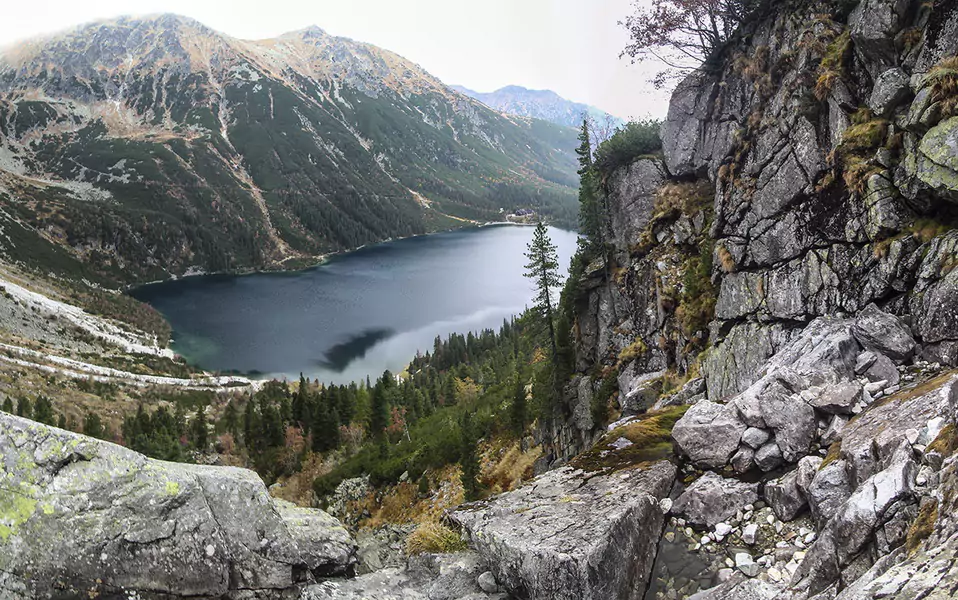
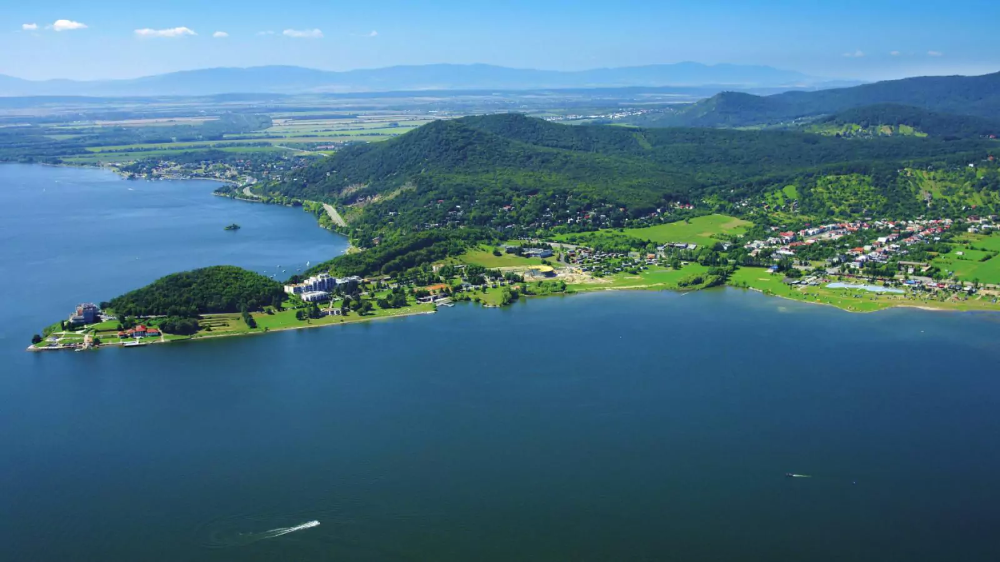
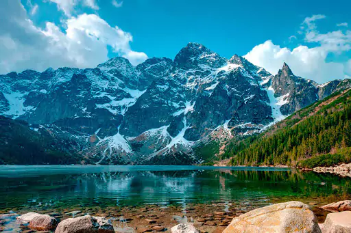
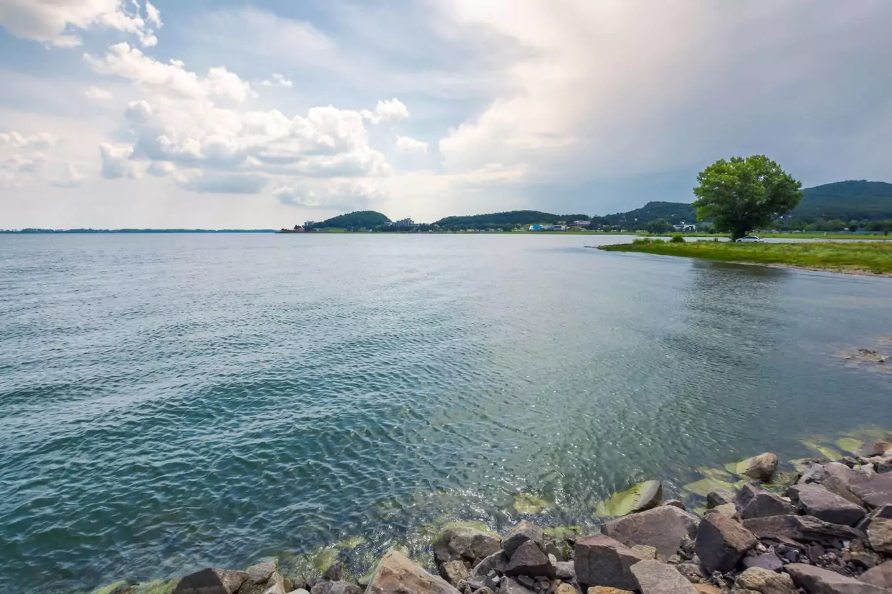
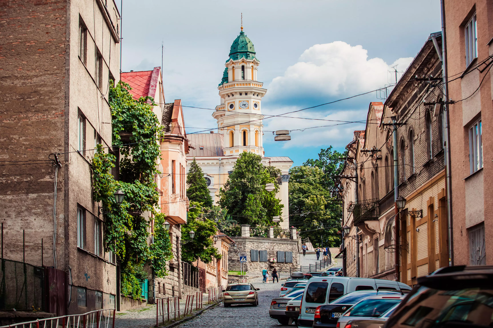

«Морське Око»

Характеристика:
Маршрут:
Морське Око - Ширава - Ужгород.
Довжина:
121 км.
Тривалість:
1 день.
Складність:
підійде для більш досвідчених велотуристів. Притутній перетин кордону.

Опис:
Подорож до найбільшого та найвідомішого
озера у Татрах,
визнане The Wall Street Journal одним з п’яти найгарніших у світі! Та до найбільшого
техногенного озера в Словаччині, навколо якого створені ідеальні умови для оздоровлення та
занять водними видами спорту, риболовлі та походів.

Морське Око
Морське Око (словац. Morské oko) — озеро природного походження на території Словаччини,
розташоване на сході країни.
Утворилося в результаті зсуву гірських порід. Тягнеться приблизно на 775 метрів в довжину.
Його найбільша ширина 300 метрів. Площа становить 0,13 км², з максимальною глибиною близько
25 м.
З 1984 року є частиною національного парку. В озері водиться форель.
З 1984 року є частиною національного парку. В озері водиться форель.

Ширава
Земплінска Ширава або Словацьке море (словац. Zemplínska šírava) — водосховище на річці
Лаборець, Словаччина. Розташоване біля підніжжя Вигорлата за 10 км від міста Міхаловце і 35
км від Ужгорода. Друга за величиною водойма країни.
Довжина водосховища — 11 км, ширина — 3,5 км, площа — 33 км², максимальна глибина — 16,5 м.
Середня температура води влітку — 20ºС.
Завдяки своїм сприятливим кліматичним умовам Земплінска Ширава є одним з найпопулярніших
курортів в Словаччині. Тут розвинена рекреаційна інфраструктура — є готелі, приватні вілли і
бунгало; упорядковані пляжі загальною протяжністю 12 км; ресторани, бари, аквапарки, тенісні
корти, майданчики для міні-гольфу, пункти прокату човнів, луна-парк і т. д.
У водосховищі водяться: щука, судак, короп, вугор і лящ.
У водосховищі водяться: щука, судак, короп, вугор і лящ.

Ужгород
У́жгород — місто на річці Уж в Закарпатській області України, центр Ужгородської міської
громади та Ужгородського району.
Цікаві місця:
● Ужгородський замок
● Кафедральний греко-католицький собор
● Хоральна синагога
● Пішохідний міст через Уж
● Центр Ужгорода з боку моста Масарика
● Ужгородський замок
● Кафедральний греко-католицький собор
● Хоральна синагога
● Пішохідний міст через Уж
● Центр Ужгорода з боку моста Масарика
Маршрут на мапі: